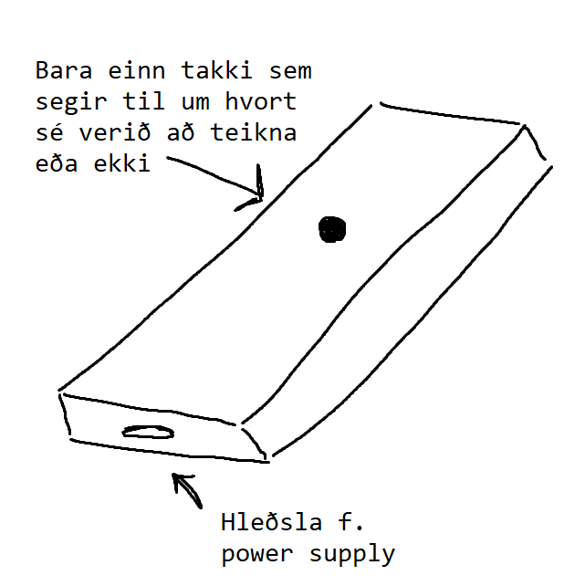

Verkefnið í stuttu máli er "skywrite" fjarstýring. Í fjarstýringunni er arduino tölva sem er tengd við bluetooth module, accelerometer og gyroscope.
Accelerometer og gyroscope mæla staðsetningu og hreyfingu fjarstýringarinnar. Það er þýtt yfir í hnit og tölvan sendir þessi x, y og z hnit yfir í farsíma í gegnum bluetooth module-ið. Þessi hnit myndu svo translate-ast sem punktar í hnitakerfi og línur myndu teiknast á milli punktanna.
Maður væri í raun að teikna mynd á "ósýnilegt blað". Þessi mynd sendist svo inn í Augmented Reality app sem útfært er í Unity. Þegar myndavél símans horfir á einhvern ákveðinn stað á vegg birtist myndin sem arduino fjarstýringin teiknaði.
Verkefnið er í raun í tveimur hlutum: Arduino hlutinn og Unity hlutinn. Farið er ítarlegra í báða hluta ef ýtt er á þá í efnisyfirlitinu
Linkur á Repository